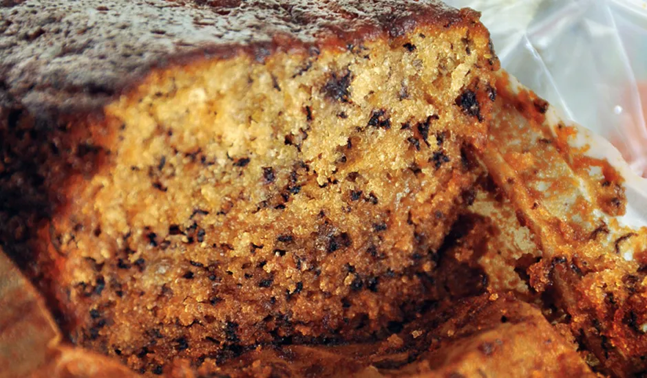

This banana bread recipe creates the most delicious, moist loaf with loads of banana flavor.
Serving: 1slice | Calories: 252kcal | Carbohydrates: 37g | Protein: 4g | Fat: 11g | Saturated Fat: 6g | Cholesterol: 49mg | Sodium: 225mg | Potassium: 188mg | Fiber: 3g | Sugar: 19g | Vitamin A: 318IU | Vitamin C: 3mg | Calcium: 48mg | Iron: 1mg